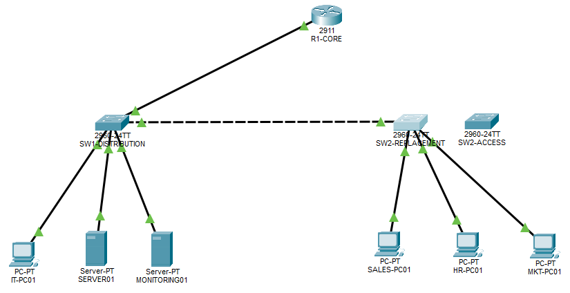
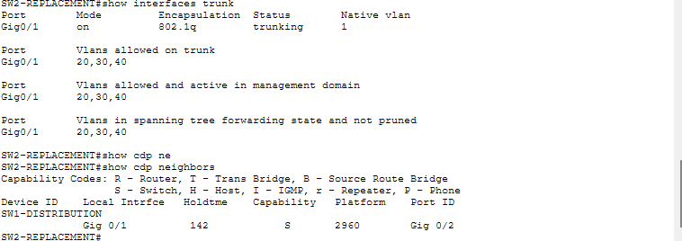
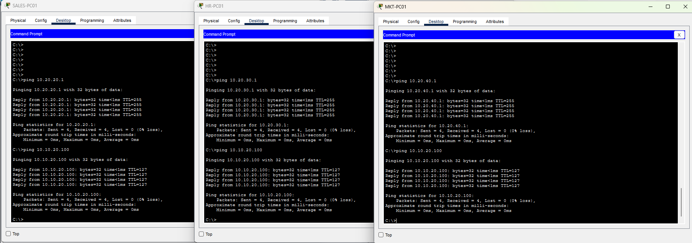
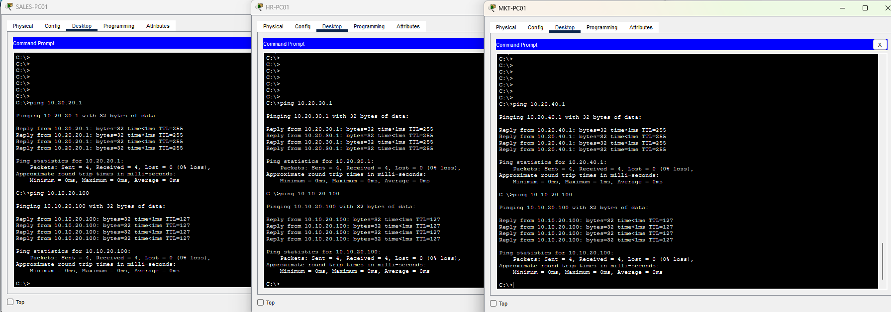

NET03 / CISCO PACKET TRACER
Access Switch Replacement, Migration & Rollback
I replaced the switch serving Sales, HR, and Marketing, verified DHCP and routed connectivity, then rehearsed a return to the original switch before completing the final cutover.
This planned change builds on my NET01 office network. I kept a working baseline, staged the replacement before disconnecting users, and used the same acceptance checks throughout the migration.
THE OBJECTIVE
Replace the switch with a tested way back
A switch replacement has to preserve the users’ network paths. For this lab, I replaced SW2-ACCESS with another Cisco 2960-24TT and kept the original switch configured and available for rollback.
The change covered three access VLANs and one uplink. R1-CORE remained the router and DHCP server. I did not change its gateways or DHCP pools.
PRE-CHANGE SURVEY & PLAN
Make the port map explicit
I checked interface status, VLAN membership, trunk forwarding, CDP neighbors, and the original running configuration. CDP confirmed SW2 Gi0/1 connected to SW1-DISTRIBUTION Gi0/2. I retained the same port numbering on the replacement.
| Connection | Original port | Replacement port | Required role |
|---|---|---|---|
| SALES-PC01 FastEthernet0 | Fa0/1 | Fa0/1 | Access VLAN 20 |
| HR-PC01 FastEthernet0 | Fa0/2 | Fa0/2 | Access VLAN 30 |
| MKT-PC01 FastEthernet0 | Fa0/3 | Fa0/3 | Access VLAN 40 |
| SW1-DISTRIBUTION Gi0/2 | Gi0/1 | Gi0/1 | Trunk: 20,30,40; native VLAN 1 |
I recorded each client’s address and checked its gateway and SERVER01 at 10.10.20.100 before starting. Sales, HR, and Marketing held 10.20.20.100/24, 10.20.30.100/24, and 10.20.40.100/24 respectively. All six baseline paths passed after repeating an initial Sales server test that lost its first reply.


IMPLEMENTATION & VALIDATION
Stage, migrate, verify, and rehearse recovery
- Stage the replacement: I configured the hostname, PVST, the six existing VLANs, three access ports, and Gi0/1’s trunk allowed list. While uncabled, I checked administrative settings and saved the configuration. Operationally down was expected at this stage.
- Verify the uplink: I moved SW1 Gi0/2 to replacement Gi0/1 first. After convergence, the trunk forwarded VLANs 20,30,40 and CDP identified the expected upstream port.
- Move the clients: I moved the three PC connections according to the port map, checked their access VLANs, and repeated each gateway and server ping.
- Test DHCP acquisition: on all three PCs, I released and renewed the leases. Each received the correct subnet, mask, and gateway again, then reached SERVER01 with 0% loss.
- Test rollback: I moved the four connections back to the original switch and verified its trunk and all six client paths. This was a planned rehearsal after a successful cutover.
- Complete the final cutover: I returned the connections to the replacement and repeated the trunk and six client checks. All passed.
SELECTED EVIDENCE
Verify forwarding, recovery, and the final client paths
Images open at full size. The PDF includes the original survey, staging checks, saved configuration, individual DHCP renewals, and separate rollback and final test results.






| Checkpoint | Result |
|---|---|
| Pre-change | Three gateway and three server paths pass. |
| First cutover | Correct access VLANs and trunk forwarding; six client tests pass. |
| DHCP release/renew | Three correct leases; three subsequent server pings pass. |
| Rollback rehearsal | Original trunk restored; six client tests pass. |
| Final cutover | Replacement trunk restored; six client tests pass. |
OUTCOME & LESSONS
A completed change with a tested recovery procedure
The replacement preserved departmental VLAN membership, DHCP acquisition, gateway reachability, and the tested server paths. The original switch also restored those paths during rollback. I finished with the replacement connected and the original available as a spare.
The most useful habit was checking the current state at every stage: administrative configuration before connection, operational forwarding after connection, and client reachability after each cable move. Typing the configuration and seeing green links were only part of the verification.
I saved the staged replacement configuration with a captured [OK] result and confirmed the final configuration and Packet Tracer saves at closeout. No reload test or outage timing was performed. The results establish the specific DHCP and ICMP checks documented here; application availability and performance were outside the lab.
The change reference contains the port map, reconstructed staging commands, acceptance checks, and reverse cable map. The original .pkt file was not supplied for publication.
CONTINUE EXPLORING
From building a network to operating it.
NET01 establishes the office network. NET02 follows flagged endpoints. NET03 practices a planned hardware replacement and recovery.